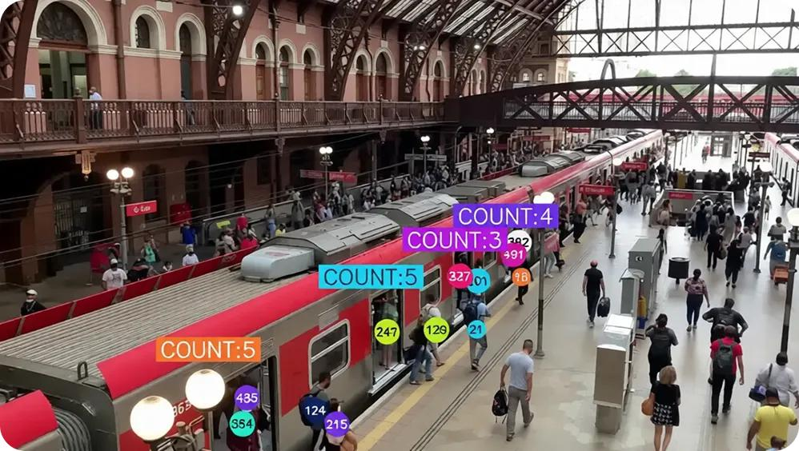
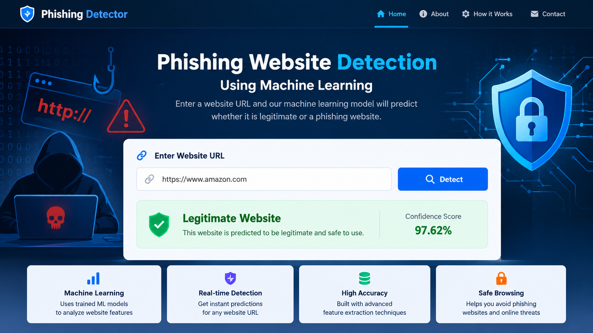
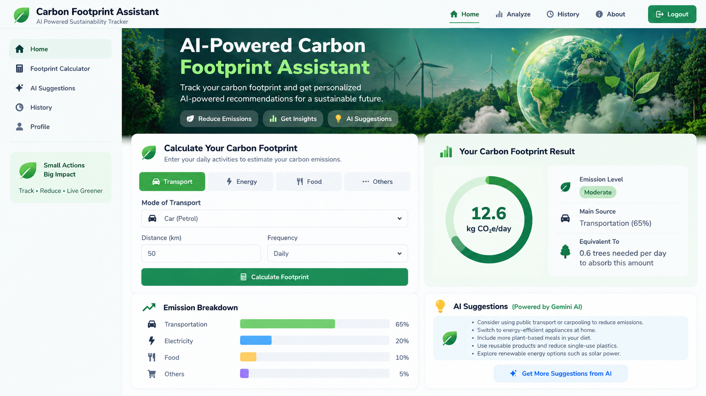
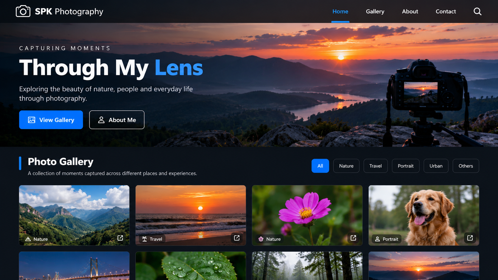

Programming
- Python
- Java
- SQL
- JavaScript
OPEN TO ENTRY-LEVEL OPPORTUNITIES
AI/ML Engineer · Python Developer · Software Developer
B.Tech graduate specializing in Artificial Intelligence and Machine Learning, with hands-on experience building AI, machine learning, backend, and web development projects.
01import cv2
02import tensorflow as tf
03
04def analyze(frame):
05 result = model.predict(frame)
06 return result
ABOUT
I am a B.Tech graduate in Artificial Intelligence and Machine Learning with hands-on experience building AI, machine learning, backend, and web projects. I enjoy solving practical problems and continuing to develop my software engineering skills.
Contact me ↗SKILLS
Tools I’ve used while learning and building projects.
PROJECTS

Developed a computer vision system to detect and analyze crowd density using YOLOv8. Processes images and videos to detect people and generate crowd counts.

Built an application that analyzes website-related features and predicts whether a URL is legitimate or potentially phishing.

Developed an AI-powered application using Java Spring Boot and the Gemini API to provide intelligent assistance related to carbon footprint and sustainability.

Designed and developed a responsive photography website using modern HTML, CSS, and JavaScript.
EDUCATION
Vel Tech University, Chennai | CGPA: 7.8
Sri Chaitanya Junior College, Vijayawada | CGPA: 6.8
KVR High School, Guntur | CGPA: 9.6
CERTIFICATIONS / ACHIEVEMENTS
GeeksforGeeks 2024
Wipro TalentNext 2025
Collaborated with a rural community to evaluate localized engineering challenges and proposed tech-driven strategies focusing on sanitation, energy, and digital literacy.
Led localized demographic data gathering, drafted analytical reports, and coordinated closely with university faculty and village leaders for rural development blueprinting.
CONTACT
Open to entry-level opportunities in AI/ML, Python, software, and full stack development.
This opens your email app; the website does not send or store messages.